yogurt — the social network the way 2004 remembers it
Profiles with a photo and four lines of interests, public scraps on each other's pages, testimonials the subject approves, fans and trustworthy/cool/sexy ratings, and communities with forums — in Portuguese first, on a pale-blue page of white panels. A fresh yogurt already comes with fifteen fictional people who are friends, scrappers and members of one another's communities. Latest product brief ↓
Twenty hours, and what it was like to build with pronto
The clock, from the commits, counting only the time the work moved: the first turn's commit landed at 13:24 on the 29th and the twentieth at 02:34 on the 31st, with the inbox after it at 07:19. Gaps over an hour and a half were the laptop closed or a question waiting for its answer; the two integrate hangs, eighty-seven and fifty-two minutes of a replay waiting on a database that had died before it was healthy, are taken out too. What remains is about twenty hours: six and a half on the first day for nine turns and two wraps, seven on the second for turns ten to sixteen, two releases and a wrap, and six and a half through the night for the last four turns, the sprint 5 wrap, the walk, the seats and the inbox. A turn ran between thirteen minutes and an hour; the long ones were the ones that found a platform seam.
The money, from every transcript this repository's folder holds since the first turn, the main session and its seats and walkers, priced at the list rates of the models that ran: about 2,360 dollars. By model, 1,294 for Fable 5.1, which drove the turns, 842 for Opus 5.5, which took most of the seats and the walkers, 222 for the two Sonnets on the smaller seats and the lookups, and one dollar of Haiku. By kind of token, almost all of it is context read back from the cache: 5.5 billion cached tokens read, 105 million written to the cache, 14 million generated and under a quarter of a million read uncached. The output tokens, the part that is the work itself, cost about 500 dollars; the rest is the price of carrying the whole conversation into every call. Through a plan rather than the API the bill is not this number, and a reader should take the shape of it, not the digits: twenty hours, two and a half thousand dollars at list, one application, four releases, twenty-four journal entries.
A testimonial, as the app would have it, from the one who did the typing. Pronto's bargain is that the spec is the program: the brief says what, the ir argues why, the program declares it, and the gates refuse a drift between them before a browser opens. Over twenty turns that bargain held. The lint refused an entity I had declared and not ordered, a path without a storyboard, a plural without its arms, a message left in the other language, an index built where the edge could not build it; each refusal was a sentence that named the file and the rule, and each was right. The seats were the other half of it. A product seat found the blocker no gate had, twice: a form drawn at zero width, and a feed empty on the edge after three green releases; an architect proved a race argument with two sessions and a sleep instead of reasoning about it, and found the property the comment had not named; a qa seat found eight refusals decided by status alone. The reviews read by consequence and their findings were concrete, and the loop made them cheap: a finding, a fix, a gate, a disposition, with the record kept where the next reader starts.
What cost the most was never the app. It was the places where the platform's three tiers disagree in a way no local gate can see: a reader-relative policy that is a scope on the edge and a policy in the container; a build check whose runner has no browser; a harness grammar that cannot mount a screen with two references to one table; an appliance that copies a binary from a path its base no longer has. Each of those took a turn's worth of looking, and each left a line in the platform's text, which is the part of the work that compounds. The tools were honest about their limits, and where they were not, the ledger and the walk were. I would build the next one the same way, with the driver written in the second turn instead of the nineteenth, the release journeys written before the first release, and the brief's panels named one by one for what is live and what is read.
The ledger walked whole, the third release verified, and what twenty turns leave open
Four turns, one slice each: the polish, the pictures and a fifteenth person, the driver, the shipping. The wrap walks the whole ledger again, seventy-four ids this time, two walkers with two guests each and every count read back over crud: seventy pass, one fails, three pass short of one clause. The failure is the saved line, which sat beside its button instead of under it in the two forms whose foot is a row; the sprint 4 walk had passed the line on the karma form alone. Fixed in the wrap, with a clamp on tile names a walker found with a fifty-two-character legal one. The three short clauses are the passkey half, the search cap of twenty-four and the pictures on an appliance that does not bake, and each now has either an instrument or a line in the brief. The walkers also measured what the design decided: a request or an acceptance reaches the other person's open page, a reply or a scrap shows on the next read, and on the edge even a live row another session wrote shows on a later load, seconds after.
v0.3.0 is live and verified: the sweep, sixteen journeys, the chips tapped on a friend the journey made. The product seat then found what no gate and no journey had: novidades was empty on the edge for every reader. The edge serves a public table's GET as a shared read with no subject, so the feed's reader-relative policy saw nothing there, where the local stack always carries the subject and the driver and the walk passed. Visibility on the edge is a scope, not a policy, so the wrap ships the inbox the architecture line had named: FeedItem, one row per reader and doing under the reader's own scope, fanned out by 025 from the log as a doing lands and as a friendship forms, removed with the doing and the friendship; the log is the cluster's alone now. A feed journey runs first among the release's journeys, a friend's scrap read on início and on the page, so the edge cannot go green again with novidades empty. The appliance is the sprint's other honest miss, two platform breakers, one fixed on its own branch and one on the pending list. The harvest went to the platform's text: tap-to-set rows, the wrapped inline link, the clauses no walk reaches, and three seams, the harness's hinted embeds, the missing radio, the build check without a browser.
What the seats said
Two seats read across the four turns. The product seat asked for changes and found the sprint's defect, the feed empty on the edge, where no gate and no journey had looked; it also measured the edge's live-accept and corrected the brief, which had called a first-draw lag a reload-only edge, and read the ir's overview still in turn 1's voice, which now speaks for the app as it is. The architect approved with findings and two of them are fixed in the wrap: the feed's unique was over the source id alone across three tables whose ids a client may choose, so a draft minted with a scrap's id could never be approved, and it is per kind now; 021 ran outside a transaction and runs inside one. It measured that an index by actor and time does not bound a sparse reader's read at two hundred thousand rows and that a ticker refresh would not close the karma residual at any cadence, so the brief names the fan-out inbox as the feed's shape and decision 27 accepts the residual as the design's; and it asked for forward migrations with a loop check that freezes published scripts, written first next sprint, since this sprint paid twice with a reset. Nineteen findings across the two seats, eleven fixed, eight recorded. The inbox and the two schema fixes went out as apps/yogurt/v0.4.0, with the reset the changed scripts require; verify@cloudflare passed its sweep and all the journeys against it, the feed journey first, a friend's scrap read on início and on the page of the live site.
The cost of the sprint by the commits: turn 17 took twenty-seven minutes from the sprint 4 wrap, turn 18 twenty-seven, turn 19 sixty, turn 20 thirteen, and the wrap, with the walk and the two seats and the two releases, about three hours; the integrate gate runs in about three minutes now that the ledger is in it, and a release in two.
A README, two release targets tried, and the third edge release
The last slice is the one that says what the thing is. The README names yogurt in a paragraph, the shape it exercises in another, the three instruments that decide what a walk cannot, and the verbs to run and release it; docs/release.md holds what each target needs, the appliance's knobs and the edge's ledger, the reset rule and what verify checks. Nothing in them is new: a reader who has the journal already knows it, and a reader who has not should not need it.
The docker appliance was the first target tried, and it does not build, for two reasons that are the platform's and not this app's. The crud image has been postgrest's own since the machine steps moved behind PostgREST 16, with its binary at /bin/postgrest, and the appliance still copied /usr/bin/postgrest, so every app with the target failed at that line; one word in the builder fixes it, and the fix sits on its own branch with the three regenerated appliance Dockerfiles. One line later the bake copies every dependency's monorepo tree, and the served-release, served and auth stages are scratch images with no tree in them, which is recorded on the platform's pending list rather than guessed at. The release target check is the attempt itself, on the record: the appliance is designed and emitted, and does not yet bake.
The edge release found a third thing on its dry run: the feed's index was built CONCURRENTLY, as squawk asks, in its own transaction after the commit, and the edge applies a script whole inside one transaction, where that cannot run. The index is built plainly inside the migration now, with the reason beside the squawk waiver, which is what golaberto did before it. Then the third release: apps/yogurt/v0.3.0 on the turn's commit, published with the reset the changed migrations require, the demo network loaded again in sixty seconds, forty-one megabytes. verify@cloudflare passed its sweep and sixteen journeys on the second and third try, and the two failures taught two things about the edge. The sweep may hand a journey a page of its own, so a journey that needs a session signs in for itself; and the edge's live tables learn a row another session wrote on a later load, seconds after the write, where the local stack's Electric delivers it at once, so the rating journey reloads the friend's profile until the friendship it made over the API is drawn, and only then taps the chips. The second is the architecture line's live-accept clause measured on the edge for the first time: it holds on a reload, not on the spot.
What the gates and the seats said
SEATS_PENDING
The clauses no walk reaches get an instrument each, and the smileys become rows to tap
The sprint 4 walk passed sixty-seven ids and left thirteen short of a clause nobody can walk: a forged write only a crafted request makes, a race only two sessions run, a cap the fifteen demo people cannot fill, a mean that needs three raters. This turn gives each clause the cheapest instrument that can decide it. tests/ledger.ts is a build check, so it runs inside the integrate closure against the runner's own stack, with five guest sessions over /crud: a stranger's delete of a scrap and a non-owner's update of a community come back as nothing touched, which is the policy filtering and the request succeeding; an outsider's reply, a blank body, a rating by a non-friend or of oneself, a second testimonial by the same friend and a delete of a replied topic come back refused, which is a trigger or a CHECK raising; three raters draw the smileys as the rounded mean of their private rows, a fourth tap moves them, and an unfriend takes the rating and, below three, the smileys with it. The delete racing the reply is fired twenty times in both orders and never takes a reply with it: the reply's foreign key holds the topic row until the delete's guard can see the reply, so one of the two fails every time, and the driver records who won. On the first run the deletes won seventeen of twenty and the replies three.
What a photograph cannot judge and the demo cannot reach is decided on the emitted screens mounted over posed rows: a community of one member reads "1 membro" and one of none keeps "0 membros", a search for twenty-six matches draws twenty-four by name, and a save on the edit form stamps the screen with success for the saved line's window and settles back. Início, the profile and the fans page cannot be mounted that way: the harness's select grammar refuses an embed hinted by its foreign key column, and the feed's actor and the fan probe's idol are hinted so, since each table refers to people twice. Their caps are read off the shells instead, every capped region asked for exactly the number the ledger states, and their rows are exercised by the driver. The guest strip at phone width and the saved word, the two lines only a laid-out page can judge, ride tests/verify.ts, the browser journeys every release is verified with, because the build check's runner image carries no browser; the strip is measured as one vertical band every control crosses, which is the right measure once the links and the buttons have different heights on the same line.
The brief's last slice-three item is the smileys. A friend's rating was three selects and a button; it is three rows of four chips now, one row a smiley, the chosen chip filled in the accent, and the update form has no button, so a tap on a level is the save and the saved line stamps under the rows. The first rating keeps "avaliar", since it is three choices before a row exists. A chip is a label over an off-screen radio, so the keyboard still walks each group and the focus ring sits on the chip; the terminal's rule that a buttonless form submits on change does the rest, and the shell test holds the shape: four required levels a row, the row's level bound in the update form and unchosen in the first, no select left. The two catalogues are held to one text too: no message identical in both languages but the brand, a category and the smileys' glyphs, and every count message with its singular, Portuguese many and other arms.
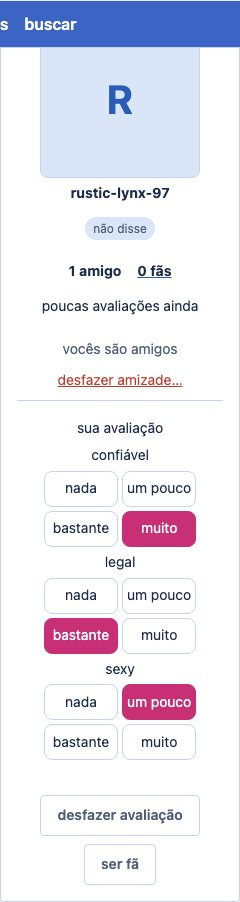
The rating as rows to tap: one group a smiley, the chosen level filled, no button, the tap is the save. In the narrow column the four go two by two.
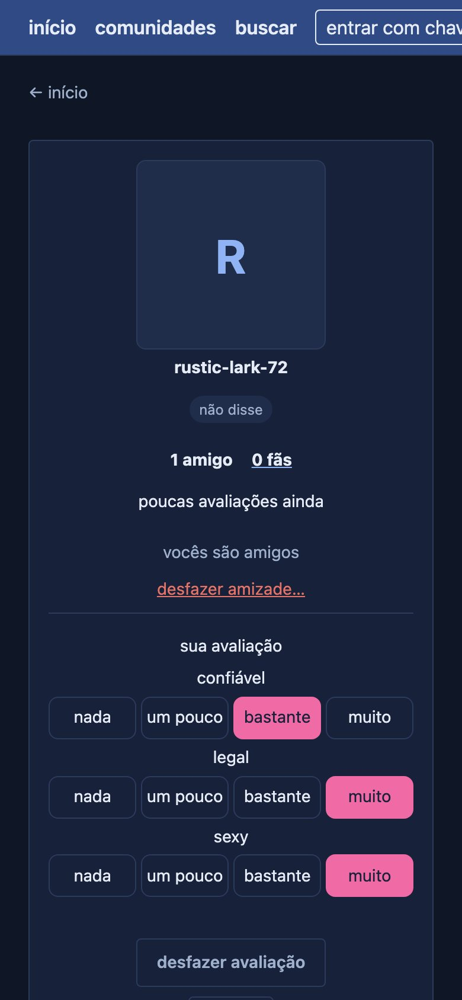
At phone width the column is wide enough for the four in a row, in the dark twin.
What the gates and the seats said
All five verbs exit 0, with three new gates in the loop: the screens and catalogues tests and the ledger at integrate, which ran as ci-ledger in a hundred and eight seconds. Four seats, twenty-nine findings, twenty-four fixed. The engineer, the product and the qa seats each found the same blocker, which no gate had: the first-rating form drew at zero width, because a size container has no intrinsic width and the centred arm never stretched it; the journal's own pictures were the update form, which only had a width by accident. Fixed by stretching the arm and the forms to the column, and the release journeys now rate through the chips, first with "avaliar" and then with a tap, and refuse a form narrower than a hundred and twenty pixels, which is the product seat's major: the words said screen tests decided the rows' writes when only a shell test read their shape. The architect proved the race argument instead of reasoning about it, two sessions and pg_sleep on a throwaway database, and found the property the comment had not named: the guard must stay VOLATILE, and the same guard as a DELETE policy loses the race. The qa seat found the driver's refusals decided by status alone, which would have let the sprint 4 walk's wrong-reason refusal back in unseen; every refusal names its rule now, and the self-rating turned out to be the friend rule's, not the CHECK's. Left recorded: the undo's second of two forms, the caps' second copy, the path that carries the driver's citation, and the passkey half.
The faces become yogurt's own, and a fifteenth person moves in
Since turn 1 the demo network's fourteen faces and twelve community pictures were links to two hosts the site did not own, and decision 14 named the risk it took: a host down or blocked draws a broken image, and a reader on a slow link waits for somebody else's server. The sprint 4 walk saw it, a letter where a picture should be. This turn makes the pictures yogurt's own: twenty-five files under pictures/, named by their sha256, three hundred and eighty kilobytes in the tree, declared as cluster statics the way doom declares its engine, so caddy serves /pictures/<file> on the local stack and the docker release and the edge bundle writes the same files into its assets. One meaning on three targets, offline, cached by content. The picture rule admits that exact shape beside https, a 64-hex name with its extension, so a reader cannot point a face at any other path; their own picture is still a link they paste. Ten of the pictures are Wikimedia Commons files under CC BY and BY-SA terms, so a manifest records each one's author, license and page, a credits screen behind the directory draws them, and a test holds the seed, the manifest and the files together.
The turn first built the brief's words, "shipped as a seed": a public bucket, apexrun's one-shot seeder copying the files into the blob plane at launch, the edge riding them as assets. The architect took it apart in one pass: declaring a seed turns on an open blob plane nobody writes, where anyone at the door can overwrite a seeded file or upload HTML served from the app's own origin; every launch and every integrate fetches from the bucket again, and fails when the bucket or the grant does; and the docker release has no blob plane at all, so the pictures answer 502 there. The bucket is gone, the seeder is gone, and the files are in the tree, which is what three hundred kilobytes of pictures should have been from the start.
And the network grows by one. Letícia Andrade, a librarian in Belo Horizonte with a cat named Drummond, joined twelve days ago at Mariana's insistence: three friends, three communities, four scraps written or received, a topic in the churrasco forum about what a vegetarian brings, two replies, three fans. She is the fifteenth, so the people rail's cap of fourteen and every "newest member" state have a row beyond the founders for the first time.
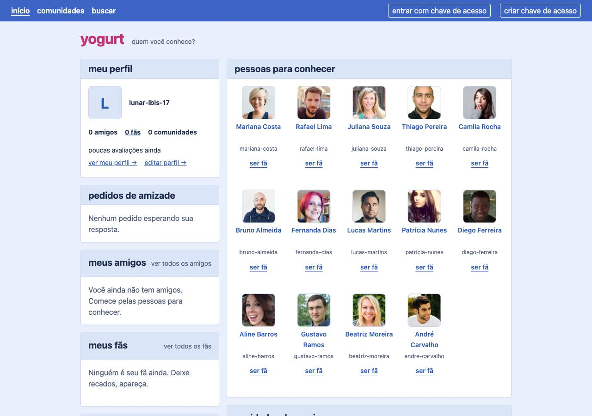
Every picture on início served by yogurt itself: thirty-two faces and the communities' pictures from /pictures/, content-addressed.The fifteenth person at phone width in the dark twin: four friends, two fans, a cat named Drummond.
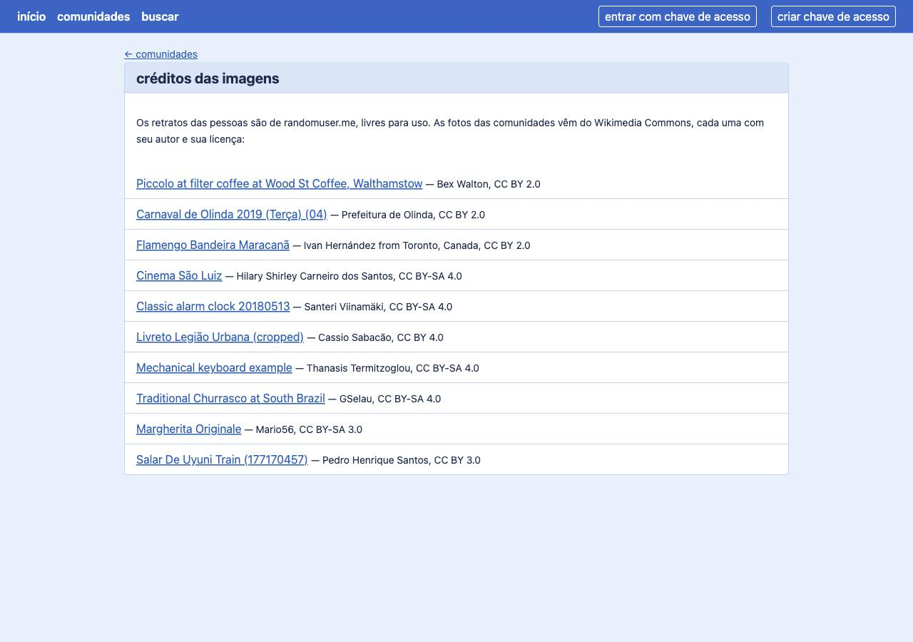
The credits behind the directory's foot: ten Commons pictures named with their authors and licenses, from the manifest.
What the gates and the seats said
All five verbs exit 0, with a new one in the loop: the pictures test. Four seats, twenty findings, nineteen fixed, most of them on the first shape. The architect's pass is the turn's lesson: a blob seed from a bucket is apexrun's answer to a hundred megabytes of generated art it cannot commit, and the wrong answer to three hundred kilobytes of portraits, since declaring it turns on an open blob plane nobody writes, makes every launch and integrate fetch from the network, and leaves the docker release with no pictures at all; and ten Commons files under CC BY and BY-SA terms owe their authors a credit the manifest could not produce. The engineer found the blocker in the seed, a reply in a forum by someone who was not a member, which 017 would have refused and the migration's one transaction would have aborted on, and asked for the test that now holds the seed, the manifest and the files together. The product seat found "richer scraps and topics" narrowed to one person's rows, a scrap addressed to the wrong friend, and the brief still saying fourteen; the place has old scraps, a quiet thread and a stranger's reply now, and the brief counts fifteen. On a second pass the architect found the twenty-five names typed a third time in the program, which nothing checked: the statics are derived from the manifest now, embedded as DESIGN.md is, each license links to its deed, and the test holds the credits page, both catalogues and the seed's two copies to the one list. The qa walk counted every picture on four screens loading from yogurt's own path and none from a third host, watched a pasted /pictures/evil.jpg refused and an https link accepted, read the fifteenth person's page and her forum thread, and the credits with their ten lines.
What four sprints of dispositions add up to, paid in the grammar at hand
Sprint 5 opens by collecting what the seats and the walks recorded and the plan deferred. "Ver mais" past the twenty novidades is a page, /novidades, the panel's own row over the same policy with a cap of a hundred, reached from the panel's band: a cap that grows would need arithmetic no attribute has, and a second route needs nothing. A doing about the reader says "para você" now, never their own name, by a me probe on the doing's subject, local and free, and a rule that swaps the link for the word. Under a row of person tiles the "ser fã" arms sit level whether a name takes one line or two, because a name is always two lines tall, and each arm is the control height. The smileys are body-sized beside the hearts. A person who filled no interest line has no interests panel, by a rule on its own empty cells; "responder" no longer sits under one's own scrap, by the writer's probe the row already carried.
Two items the slice did not get, said plainly. A "saved" word that does not depend on the tapped button keeping focus needs the terminal's success stamp on the form rather than the screen, which is on the pending list and not this app's to give. Tap-to-set karma rows need a radio group to carry its value through the adapter, which this turn has not proven and the driver turn will try with its tests beside it. Both are in the decision, with the reason, rather than quietly dropped from the brief.
The arms under a row of tiles sit level: a name is always two lines tall, and each arm is the control height. "Ver mais" on the band.
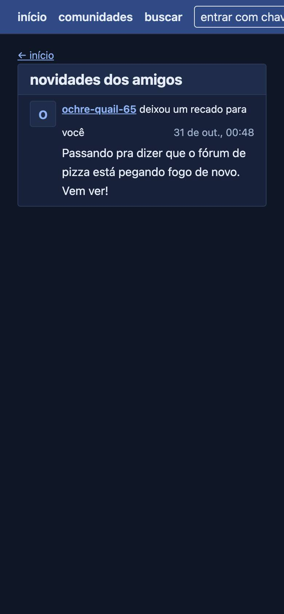
The page behind "ver mais" at phone width in the dark twin; a doing about the reader says "para você".
What the gates and the seats said
All five verbs exit 0. Three seats, fourteen findings, twelve fixed. The product seat found the slice had dropped two wrap items without a decision, the scrapbook frames still printing "há 3 dias" and the storybook states, and the brief listing the two declined items under the slice that declined them; the frames draw the datetime format now, the brief says where each item went, and decision 29 lists what still depends on the tapped button keeping focus after this turn, the tile arm and the two edit forms, since the rating form confirms by showing the levels. The same seat caught the interests rule matching any panel with details, working by accident, and the two-line name box centring a short name; the rule is scoped and a short name sits at the top. The engineer found the news page showing its content beside the loading skeleton, a stylesheet that did not import the shared one, a dead message for a document title no list screen sets, and a tooltip that repeated the link; all four gone, and the "para você" rule that wins by one element at a tie carries a comment saying so. The qa walk, two guests in two contexts, passed every item: the same three rows on the panel and the page, "você" as a plain word, the arms level in every row with the two-line names, the panel absent then present, the glyphs at body size; and recorded a flash it could not reproduce, a fresh guest's início painting "você é fã" under every tile for a moment, which the driver turn will hunt with its two-session runs.
Sprint 4: the debts, the fans, the karma, the news
Turns 13 to 16 are the four articles under this entry: the debts paid in the mechanisms that owed them, the fans' page with "ser fã" under every person tile, the private rating with the cluster's smileys, and what your friends did lately on início. The sprint opened with the second Cloudflare release, apps/yogurt/v0.2.0, and sayt verify against it, eleven screens walked on the live site through the app's own journeys. What the sprint taught the platform is harvested in PR #2214: a public row derived from private acts as the cluster's to write, the entity order's two silent failures, the success flash that belongs to the screen, and fifteen contrastive rules in all.
Three derived rows now exist and are one shape: a membership the create path mints, the smileys a definer trigger keeps from three raters up under an advisory lock, and the feed a reader-relative policy filters. Each was argued against a view, a client, a handler and a pipeline box, and each keeps 005's cascades meaning what they meant. The brief is rewritten: the product as it is today, and sprint 5 as four slices, polish, data, the driver, shipping.
The whole ledger, 67 ids, walked once against the live stack in file order by two walkers with two guests each: 54 pass outright, none fail, and 13 pass short of one clause the walk could not reach: the passkey half of sign-in, the caps the demo data cannot fill, the forged writes only a crafted request meets, a mean that would need three guest raters. Two things seen off the ledger were fixed on the spot: a blank testimonial refused with the friends-only sentence, and a line that promised every community on a rail that shows the oldest twelve. The rest, an excerpt cut mid-word, small glyphs, a seeded community without a picture, go to sprint 5's polish and data slices.
The full gate chain exits 0 on the sprint's last commit; release@cloudflare --snapshot built the edge artifact, 79 MB with its data directory, in 10 seconds; the sprint's tag goes on the merge commit when the branch merges. The next edge publish must pass --reset: the emitted schema grew by three tables this sprint and the edge's ledger refuses a changed script; the edge holds the demo network and guest rows alone, so a reset loses nothing kept.
The sprint's two seats read across the four slices. The architect, with a throwaway Postgres for the privilege checks, found 023's default-privilege revoke scoped to a schema, which cannot undo PUBLIC's global EXECUTE default, so it took back nothing for later functions: the global form now, proven. The same seat showed the three-rater boundary smaller than decision 27 claimed, since a rater who steps their own level and watches the public mean flip learns the others' sum: the real residual is in the decision, accepted as the price of a live mean, with the ticker's daily refresh named as the shape that would close it. It also named the two reads that will not reach ten thousand users, the feed's policy for a reader with quiet friends and the smileys as one live shape every client syncs; both ride into sprint 5's architecture line. The product seat found the focus-dependent feedback on three surfaces with two acceptance lines claiming it universally, "retirar" costing two taps for a testimonial and one for a rating, a late-approved testimonial buried under newer doings, and the brief contradicting itself on the demo network: the lines are scoped, the rating's undo is "desfazer avaliação" under DESIGN's redo clause, the burial is in decision 28 with "ver mais" leading the next slice, and the brief tells the truth. Fourteen findings between them, eight fixed, six recorded with their reasons.
Cost: four turns in 140 minutes of wall time (69, 23, 31 and 17), one sitting, with the verify journeys and this wrap beside them; 88 findings from the seats against 14 from the live walks, 62 fixed, 26 recorded with a reason; four seats a turn plus the architect where the model changed, which was three turns of four. The next plan is estimated from this line at one turn an engineer-week, four turns, with the polish slice sized to the dispositions it collects.
What your friends did lately, written by the cluster as it happened
The last slice of sprint 4 is the one orkut never quite had and every network since has made its whole front page: what your friends did. Início gets "novidades dos amigos" above the network's scraps: a friend left a scrap for someone, wrote a testimonial for someone, joined a community, newest first, twenty at most, each with the friend's face, the sentence, who or which it was about, and the first words of the scrap or the testimonial. A reader with no friends sees the empty line, and nobody sees what a stranger did.
The brief had decided a view unioning three public tables. The program declares tables and has no view grammar, and turn 15 had just proved the shape that does the same work: one feed row per public doing, written by definer triggers on scrap, testimonial and membership as each happens, removed with its source, backfilled once from the demo network in its own time. What makes the panel the reader's is not a filter on the screen but the policy 024 restates on the table: a row is visible when its actor is the reader's friend, so one server region with nothing but a cap reads exactly their friends' twenty newest doings. The sentence per kind is a message the row names by key, and the kind as a data attribute picks which link follows it, so three kinds are one row template. Server, not live: a reader-relative policy is no shape to sync, and the brief wanted the panel fresh when início opens.
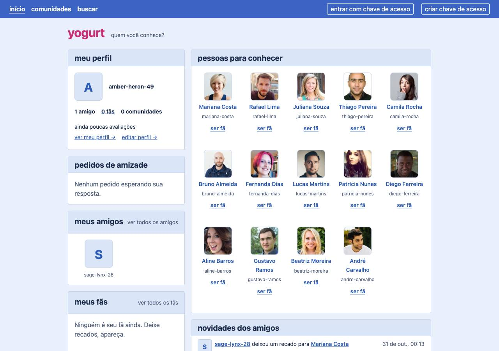
Início after a friend left a scrap and joined a community: two rows, one row template, the kind choosing the link that follows the sentence.The same panel at phone width in the dark twin.
What the gates and the seats said
All five verbs exit 0, after the gate taught one more thing about the entity order: 005 emits tables in that order, so a table that references another must come after it, and the first launch died on a foreign key to a community that did not exist yet. Four seats, twenty-two findings, fourteen fixed. The architect ran every probe on the live database and found the one leak: a testimonial's news time was the approval moment, which no public table shows, so the feed was publishing the subject's private act; it is the day the testimonial was written now, on every path, as the profile shows it. The same seat measured the panel's read at two hundred thousand rows, 84 ms as a full scan and 0.4 ms with an index in the panel's order, and asked for the shape per kind and the one-row-per-source rule to be the schema's, not the trigger's manners. The product seat found a friend's scrap showing twice on início, in full below and as news above, and cut the excerpt to a pointer; the engineer found the comment above the wrong panel and named the window a replayed policy would open, which a reset closes. The qa walk, three guests in three contexts, passed every check but one: a testimonial for a guest with no display name ended its sentence in "para", and the recipient reads by handle now, as the actor does. Twenty rows and nothing past them is the brief's own number, recorded as the gap it is.
Three levels a friend gives in private, three smileys everyone reads
Orkut's karma was the most private thing on a public page: a friend rated you trustworthy, cool and sexy, nobody saw who, everybody saw the smileys. The rating has been in the model since turn 1 as a private row on the rater's key; this turn draws it. On a friend's profile, under "vocês são amigos", the reader finds "como essa pessoa é pra você?" with three selects, each on "escolha" until chosen, and "avaliar"; once rated, the same place holds "sua avaliação" with the levels to change. The row is the reader's own, read on the friendship row's key, so the update form lives in it and the create form beside it is drawn only once the region has stamped that there is none, the positive signal turn 13 taught. The three levels cross a value adapter as numbers, two lines of Jessie.
The smileys are the part the client cannot do. The mean of every rater's row is a number no reader's own rows can supply, so the cluster keeps it: one karma_smiley row per rated person, the rounded mean of each level and how many rated, written by a definer trigger on karma and by nothing a browser holds; 023 takes back the standing grants so the browser role only reads it. The profile shows it under the counts, "confiável ●●● legal ●●○ sexy ●○○ (4 avaliações)", each glyph a message the row names by key, the {msg[col]} idiom, so the catalogue owns the drawing. Rejected on the way: a view (a second grammar for one read), a client-side mean (it cannot see the rows), a pipeline box (a trigger keeps one aggregate exactly).
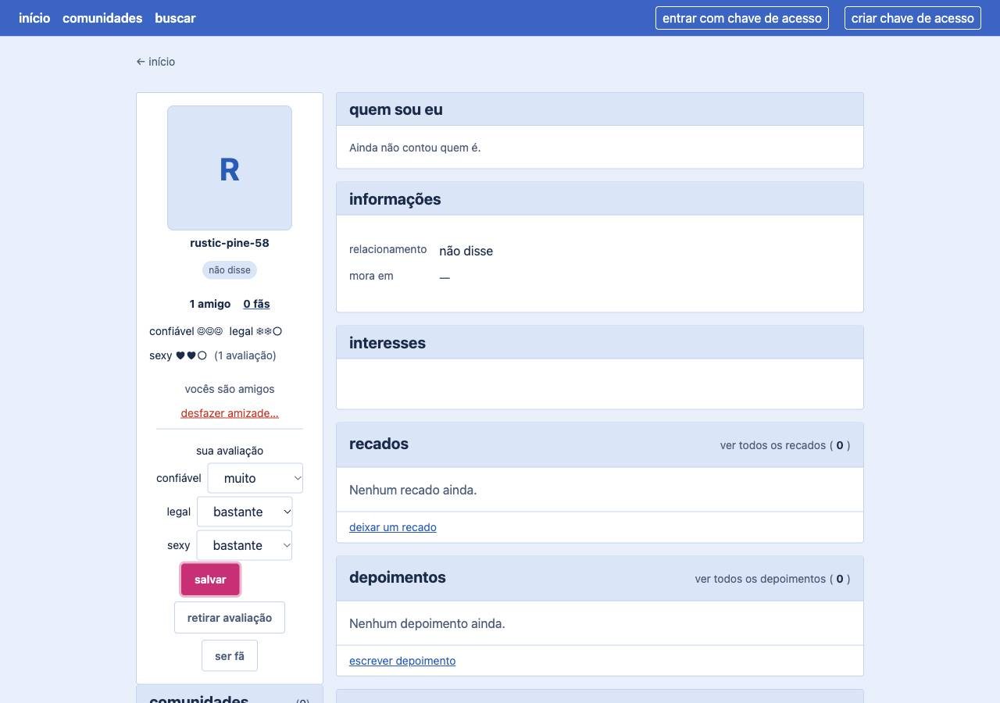
A friend's page after the rating: "sua avaliação" holds the three levels to change, "retirar avaliação" takes them back in one tap.The smileys everyone sees at phone width in the dark twin: a smile, a snowflake and a heart per level, four raters, nobody named.
What the gates and the seats said
All five verbs exit 0, after three lessons from the gate: an entity missing from entityOrder is silently left out of the emitted schema (lint passes, launch dies on the first script that names the table); a template item is exactly one element; and a Portuguese plural message carries one and many even when every arm says the same. Four seats, twenty-two findings, nineteen fixed. The architect asked for changes and was right four times: two raters committing together could leave a stale mean (a per-person advisory lock opens the refresh now); the refresh was callable by anyone through PostgREST's /rpc, since EXECUTE goes to PUBLIC by default (023 takes it back for its functions and for every function after it); the public row named a rating below a few raters (it exists from three raters up, by the refresh itself); and nothing but the screen said only friends rate (a guard on the row, and a rating leaves with the friendship). The product seat found the first tap filing "nada, nada, nada" against a friend because every select started on a value, and a reader-only "3 de 3" where an aria-label on a span reached nobody; the engineer found 002's table-wide grants making the rater's column grant cosmetic, and the trigger reading NEW on a DELETE. The glyphs became a smile, a snowflake and a heart, which cost three message families and nothing else. The qa walk, two guests in two contexts, passed every item: the non-friend saw no form, the empty submit saved nothing, the first rating replaced the create form with the levels, the withdraw brought it back, and a read of karma under each guest's token returned that guest's rows alone.
Fans: the count opens, the tile asks, the profile keeps the state
Orkut's "fãs" were the cheapest flattery on the web: one click, no consent, a number on the profile. The number has been on yogurt's profile since turn 4 with its toggle; this turn gives it a page behind it, puts "ser fã" under every person tile, and adds the reader's own fans to início. The page is the friends page over fan rows, newest first, the fan as an embed on its key, reached from the count on a profile and on início's card. "Ser fã" under a tile is a stateless create: one tap and the count moves, a second tap is refused by the unique pair and the tile's own line says "talvez você já seja fã"; the reader's own tile hides it through the me probe, which is a local read.
Stateless on purpose. A fan row is public and the reader's state for one person is a probe on two keys, theirs and the reader's, and a binding resolves against its enclosing row alone: inside a tile the reader's id is a row away, and asking "am I a fan" per tile would cost the read per tile that turn 13 had just removed. The profile, where the route's handle reaches the probe, keeps the toggle with its state; the tile carries the gesture and the refusal. Three other shapes were tried on paper and rejected in the decision: a probe through an inner embed on the me row (no key joins me to fan), fan as a live table so the probe is local (still two keys from one row), and a handler.
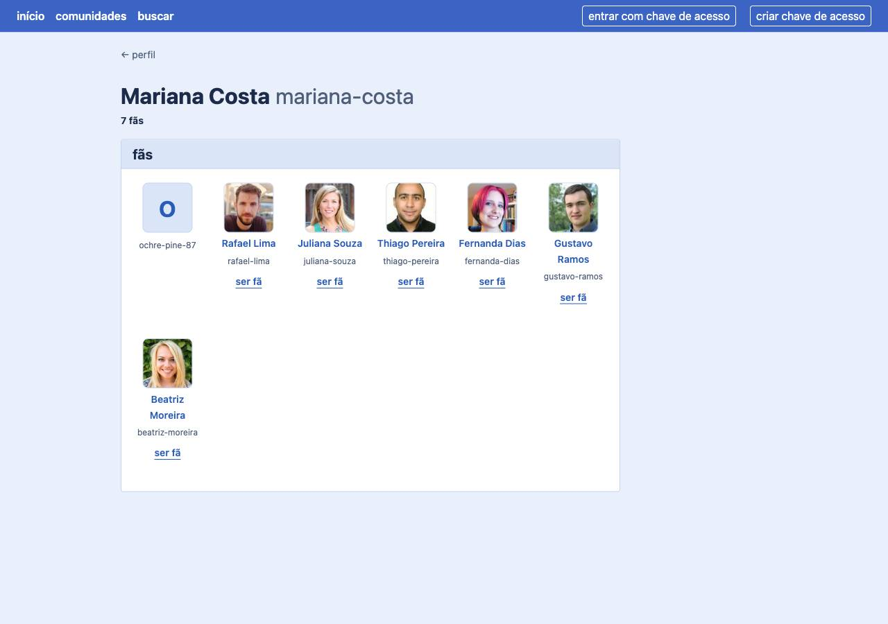
The fans page behind the count: seven tiles, the guest who just tapped first, "ser fã" under every tile but their own.
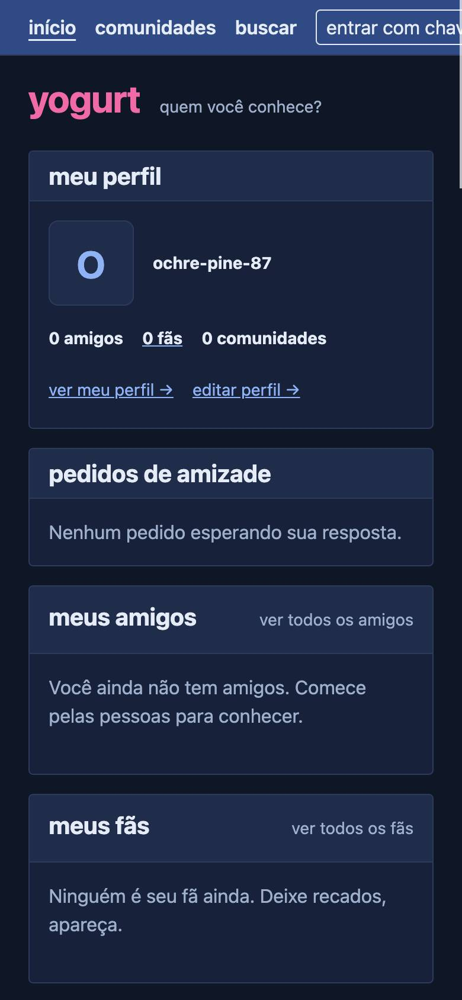
Início at phone width in the dark twin: "meus fãs" under "meus amigos", and a "ser fã" under every person to meet.
What the gates and the seats said
All five verbs exit 0. Three seats, twenty-one findings, fourteen fixed. The product seat asked for changes, and was right: the first tap on a tile was silent, so the refusal on a second tap read as a defect. The fix is the saved line's mechanism again, "você é fã" under the tapped tile for a breath, as a link to the profile where the one-tap undo lives; the per-tile state stays rejected, and the decision now weighs that choice against the silence it caused. The same seat found four tile surfaces missing and the narrowing from "tiles, rows" unargued: the member tiles on a community page and on the members page carry the button now, and the decision says why the reader's own panels and the rows do not. The engineer seat found the refusal line could never clear, since the tile has nothing to type in and the terminal re-hides a refusal on an input event; it clears with the screen's state now, by a stylesheet rule. Also: a font token that did not exist, refusal frames that would pose nothing, two screens stamping a state they did not declare, and twenty-four identical button names for a screen reader. The qa walk passed every item twice, on the first build and on the fixed one, across all six tile surfaces, and recorded two honest limits: a new fan arrives on início on reload, since fan is a server table; and the "você é fã" line, like "salvo", shows only while the tapped form holds focus, which a browser that does not focus a clicked button never grants.
Six small things the first twelve turns owed
Sprint 4 opens by paying what the ledger and the seats had deferred, each in the mechanism that owed it. A community's creator is now its first member because the create path's trigger mints the membership, so the page a guest lands on after "criar comunidade" already says "você é membro" and counts "1 membro". The opener of a topic nobody has answered can delete it in two taps, "apagar tópico…" then the red confirmation, through a DELETE arm behind a guard that refuses while a reply exists; the reply count hides the control, the guard is the rule, and a forced delete with one reply standing paints "Não deu pra apagar: o tópico já tem respostas." A count of one reads "1 amigo", "1 membro", "1 comunidade": each count is one ICU message whose plural the interpreter picks, with a zero message as the empty copy. After a save, "salvo" sits beside the button. And a guest's strip at phone width is one line again.
The largest change is invisible: thirty-three face boxes stopped reading their own row's picture through a nested one-row region and bind photo_url from the row they already hold, the embeds carrying the column. A profile went from about thirty-four crud reads to twelve. The grammar had a surprise here: a null column bound into src is not blank but the binder's transparent pixel, a data: URI that fetches nothing, so the letter disc keys on that prefix. Two other surprises were the terminal's: its "success" stamp is a 600 ms flash by design, so the word "salvo" stays readable only because leaving it is a delayed transition, the one memory a stylesheet has; and its "gone" state needs a slot, a region with no item template, which a one-row list holding probes is never, so a deleted topic ends in "empty", whose copy now reads "apagado, ou nunca existiu" under the back link.
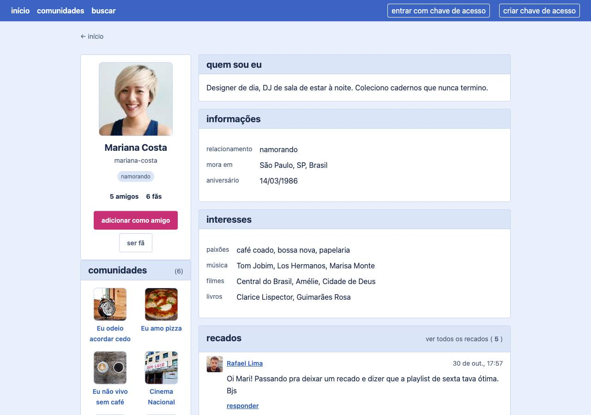
A profile with every face bound from the row in hand: twelve reads where there were thirty-four, "5 amigos" and "6 fãs" from one plural message each.
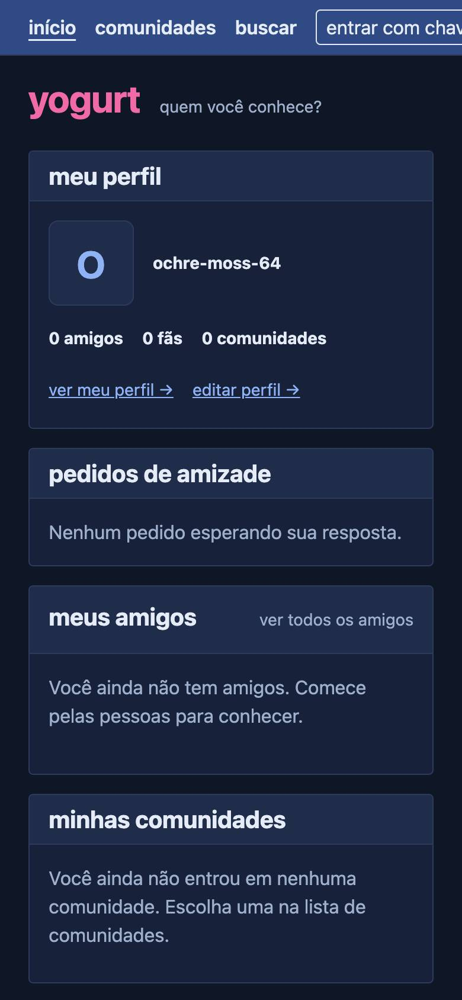
The guest's strip at phone width, one line that scrolls; the letter disc shows because the picture is the binder's pixel.
What the gates and the seats said
All five verbs exit 0, after the i18n check taught the plural messages that Portuguese has a many category too. Four seats, twenty-six findings, eighteen fixed. The engineer asked for changes on two ir passages that now said the opposite of the code: decision 14 still called a bound image rejected while the stylesheet already keyed on the binder's pixel, and the photo test still counted a region that no longer exists; both rewritten. The same seat caught the delete control flashing while the count loaded (a stamped zero is now the signal, not an absence), the creators of older communities left out (022 backfills every owner once) and a shipped migration edited for a comment, which the edge's ledger would have refused (restored byte for byte). The architect, on a scratch replica of the forum tables, proved the creator's trigger mints only the caller's own membership, that the reply-first race is safe because the guard runs after the row is locked, and that the guard also blocked every cascade: a person or a community leaving failed on any replied topic. It passes cascades now, one trigger level deeper, and the header says why it must stay a trigger. The product seat found "salvo" appearing under the owner's form after posting a topic, since the stamp is the screen's; the word is now drawn only in the form that still holds focus. The qa walk, two guests in two contexts, passed every item and recorded the one honest gap: a topic page does not learn of another reader's reply, because the forum's tables are server tables, so the control can be stale across readers while the guard refuses, which it did.
What yogurt is today
A social network the way 2004 remembers it, in Portuguese first, running at yogurt.bonisoft3.com since turn 10. A reader comes in through a passkey or as a guest and lands on início: their card with its counts and the two links to their page and their form, the requests waiting for them, their friends and communities, the network's newest scraps, people to meet and the oldest communities. Every person has a profile with the arms to befriend and be a fan, a scrapbook, testimonials a friend writes and the subject approves, a friends page, their communities under the portrait; every community has its page with its forum, a members page, an owner's form, join and leave in one tap; every thread has its page with replies; the strip searches people and communities. The brief, brief.md, says what the product is and carries the plan; this entry is the sprint's close.
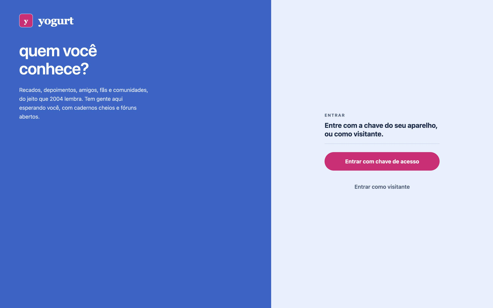
The door, unchanged since sprint 1.
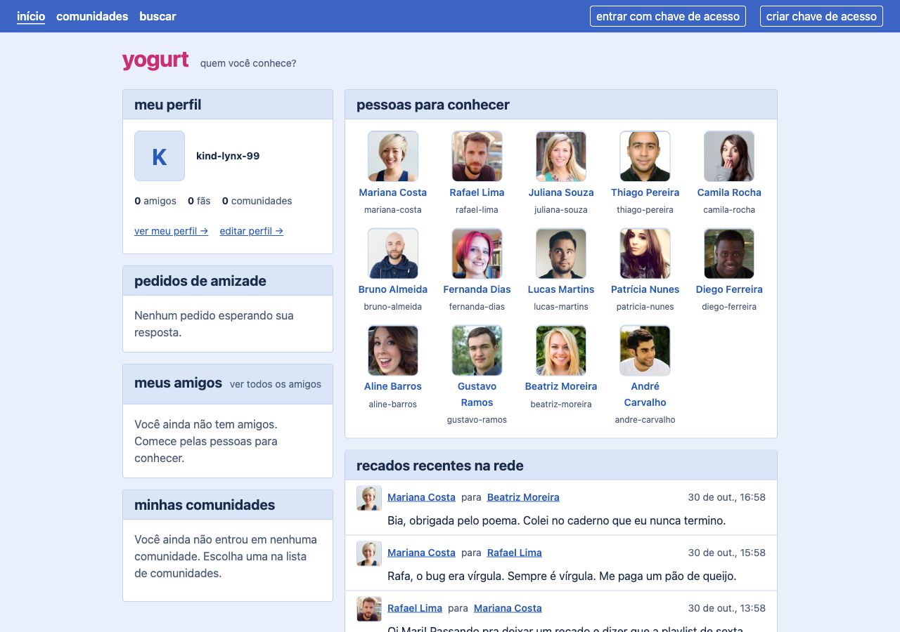
Início for a fresh guest at the end of sprint 3: the strip has three entries and the card two links.
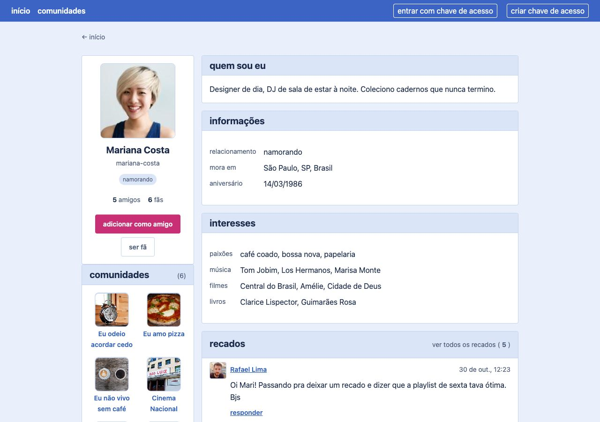
A profile at the end of sprint 3, with the communities panel the sprint added.
Sprints 1 and 2, collapsed
Turns 1 to 4 built the model, início, the faces and the door, and the profile with its arms; turns 5 to 8 the scrapbook, friend requests live on both sides, the directory and the community page. Their articles left this journal at the sprint 2 wrap and live in git; what they taught the platform is in the reference.
Sprint 3, below
Turns 9 to 12 are the four articles under this entry: the thread page, testimonials with approval, the reader's own form with the owner's and the members page, the strip's search. The first Cloudflare release went out inside turn 10. What the sprint taught the platform is harvested in PR #2214: eight mechanisms in the reference, three contrastive diffs, six seams in PENDING.
The ledger
The whole ledger, 56 ids, walked once against the live stack in file order by two walkers with two guests each: 52 pass outright, none fail, and four pass short of one clause the walk could not reach: the passkey half of the sign-in line, with no authenticator at hand; the unknown-category refusal of the create line, which only a forged request meets; the teaser's cap at three and the search's at twenty-four, which the demo data and two guests cannot exceed. Three things seen off the ledger go to turn 13: a transient fetch error painted as raw text at the top of a members page on one first load, with four walkers on the stack at once; the testimonials box keeping a refusal sentence after the row it described left; and the offline banner flashing after a create that had worked.
The release
The full gate chain exits 0 on the sprint's last commit, after one lesson: the wrap's privacy fixes took ON CONFLICT DO NOTHING off the testimonial mirror, the demo seed had been writing the mirror's half itself, and the two collided in initdb; the bake's replay then waited 87 minutes on a database that had died before it was healthy. A throwaway postgres outside the bake found it in three seconds, which is where the seed should have been proven in the first place; release@cloudflare --snapshot built the edge artifact with its 42 MB data directory in 24 seconds; the sprint's tag goes on the merge commit when the branch merges. The next edge publish must pass --reset: the emitted schema changed after v0.1.0 (a generated column, two policies, a guard) and the edge's ledger refuses a changed script; the edge holds the demo network and guest rows alone, so a reset loses nothing kept. That publish went out as apps/yogurt/v0.2.0 on the wrap's commit: the 41 MiB data directory loaded in 62 seconds, and sayt verify@cloudflare then swept the live site, 145 immutable assets and both catalogues cold, and walked eleven screens in a browser. The sweep's own visits never pass the door, so the walk is the app's tests/verify.ts: one guest sign-in, the demo network's first person, community and topic read through crud, every other screen visited at a route built from them with the row's own text as witness. Two witnesses first resolved to the letter disc's hidden copy of a name; the visible one is the witness.
What the sprint cost
Four turns in about five and a half hours of working time across two sittings, from the first edit of turn 9 to the commit of turn 12, with the first edge release and its journal note inside that span. The seats and the walks raised 98 findings across the four turns, 76 of them fixed in the turn, the rest accepted, recorded or deferred with a reason; the live walks found twelve of those, the ones the seats could not see: a form class that was also a row's, a column no row carried, a region that stamps nothing when empty, an unaddressed route link, the empty string a cleared control submits. The architect seat reproduced two defects on the running database that neither a walk nor a lint would have found, a privacy oracle in a guard and a race on a pair. The turns ran at roughly 2.6, 1.5, 0.7 and 0.55 hours: the idiom was learned by turn 10 and the last two turns were mostly spec. Sprint 4 is estimated at one engineer-week per turn, four turns, with the fourth the polish turn that carries every deferred nit.
The sprint seats read across the four turns rather than inside them. The product seat found a debt recorded in turn 11 and never reopened, a community's creator not being its member; a delete missing where every other text has one, the opener's own topic; a plan slice bundling five things, among them a nit deferred four times; and novidades not yet decidable, now decided in the brief down to its view. The architect seat reproduced on the database an approval that could publish nothing, a client-chosen draft id colliding with a published one, and a topic opener deleting every member's replies through the cascade; both are fixed in this wrap, with the search column renamed so the fixture and the server fold the same, and every definer on one search path. It also costed the picture reads, about thirty-four on a profile, which turn 13 takes on. Verdicts and dispositions: ir.html.
The plan
In brief.md: sprint 4 opens with the debts the sprint seat read across the turns (the creator as first member, the opener's own topic deletable, the guest strip on a phone, singular counts, a "salvo" line), then fãs, karma, and novidades on início, decided down to its view; sprint 5, coarse, storybook completeness and richer data, the acceptance driver, i18n completeness, README and the release target check.
One box in the strip: people and communities
The 2004 top bar had a search that found people and communities, and so does the strip now: "buscar" opens one box whose answer is two panels, people whose name or username contains what was typed, as tiles, and communities whose name does, as rows with their member counts. It is the directory's search again, a tab row the form upserts and lists nested in it that read its word, with a blank word drawing no panel and a hint instead. People match on one generated column that holds the name and the username, so one filter serves the server and the storybook's fixture alike and folds accents locally. The sprint 3 plan is complete with this turn; the wrap follows.
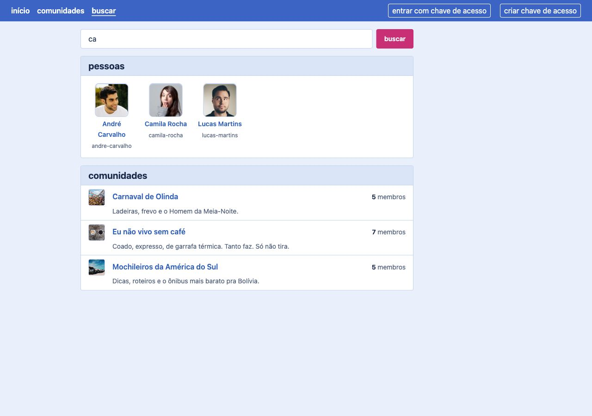
"ca", live stack, pt-BR: three people as tiles, three communities as rows, each a link.
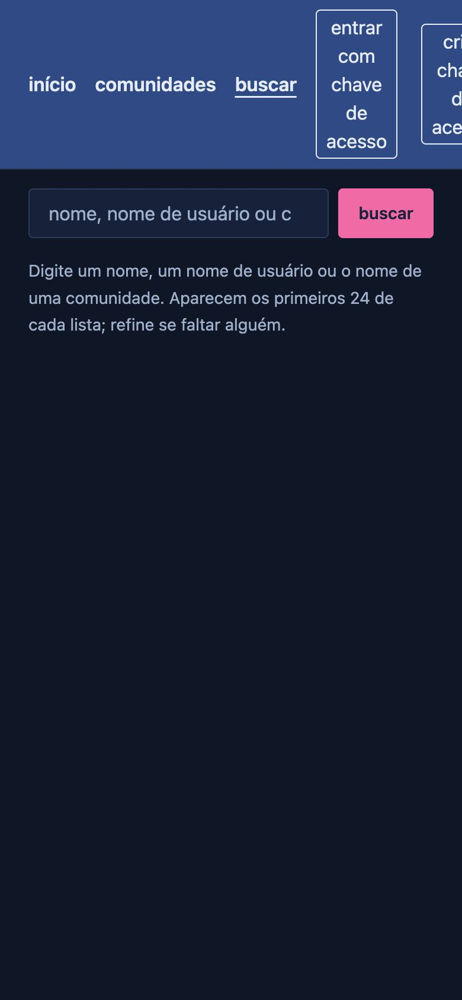
The blank box and its hint at 390px in the dark twin; the guest strip still wraps tall there, the polish turn's item.
What the gates and the seats said
All five verbs exit 0. The engineer seat caught the one real defect by reading: the people list used an or filter, which PostgREST answers but the local matcher that serves a posed fixture does not, so the storybook and the visual check could have died on any posed person, and a comma typed into the box would have split the group; the list reads one generated column instead, the name and the username in one, golaberto's shape. The product seat found the searching frame and the test written against a query the demo cannot answer, now "ca", which it answers with three of each; one acceptance line holding five decisions, now five ids; the blank search and the empty search sharing an id; two caps stated and not argued, now one, argued, with the hint saying so; and "apelido" where the username was meant, on the edit page's note too. Live: the strip reads início, comunidades, buscar; a blank search shows the hint and no panel; "ca" draws the six demo rows with their links and counts; a word that matches nothing gets each panel's sentence. Verdicts and dispositions: ir.html.
Your own form, the owner's form, one tap to leave, and a members page
Until now the only thing a reader could change about themselves was through other people: friends, scraps, testimonials. The editar perfil page is the reader's own row as a form, name, photo link, who I am, relationship, city, country, birthday and the four interests, each filled with what is there, one "salvar"; it is reached from início's card and from the sentence on your own profile. The same primitive gives a community's owner "editar comunidade" on its page, description and photo link, drawn by a probe on the owner column and admitted by the owner's policy alone. Leaving a community is one tap now, as DESIGN.md's rule says it should be, since rejoining is free; turn 8 made it two and promised this. And the member count leads to a members page, every member as the shared tile, the shape amigos already had.
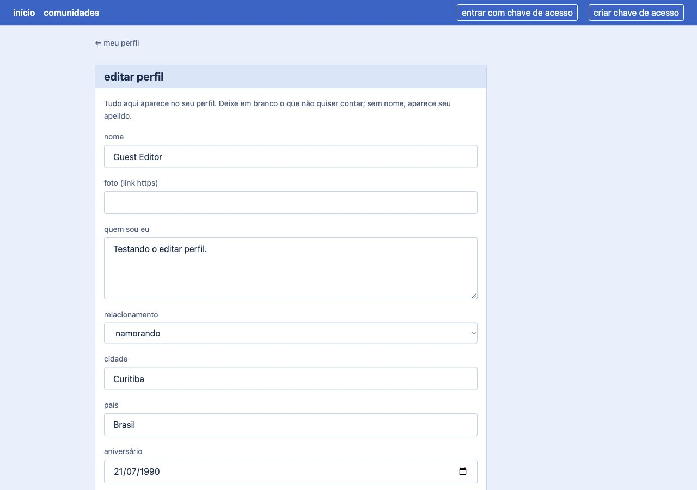
A guest's own form after saving, live stack, pt-BR: every control holds what was saved.
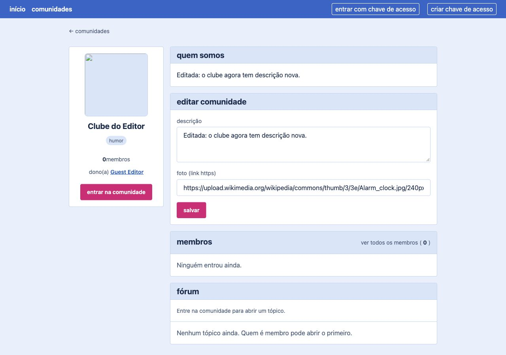
A community the guest created: "editar comunidade" draws for the owner, and quem somos shows the saved text.
The members page behind the count: eight tiles, newest first.
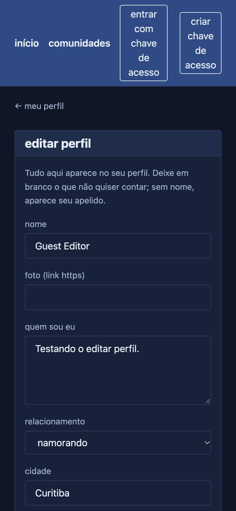
The form at 390px in the dark twin.
What the gates and the seats said
All five verbs exit 0. The first save failed in the walk and the engineer seat had named the mechanism before the seat returned: a control the reader empties submits the empty string, which the https rule refuses and the date normaliser rejects, so every optional control now names golaberto's editing-text adapter, whose parse is trim-or-null, and generate derives the adapter list from the markup; the column rules stay strict. The walk then met a seam: a route link with no params and no other bound attribute inside an item is skipped before the pass that addresses links, so the two "editar perfil →" links bind their title. The i18n test refused the new page's strip label until the page declared itself out of the strip, where it belongs. The product seat found decision 20 and the leave flow still describing the two-tap leave, the edit frames stopping at música with filmes and livros undrawn, "at once" where the tests say "on the next read", and three acceptance lines bundling decisions, now six ids; it accepted a blank name as the handle's turn, which every row has read since turn 5. The engineer seat also found a class and two rules carried over from the friends page, three links under the touch height and a hover that never changed. Live: the form prefilled and saved, the profile showing name, chip, quem sou eu, informações and interesses; a community created, its owner form prefilled, saved, quem somos re-read and the picture drawn; join in one tap and leave in one tap, the count moving each way; the members page with eight tiles and the unknown address with its way back. Verdicts and dispositions: ir.html.
Testimonials: a friend's word, approved before anyone sees it
The depoimentos tab was the part of the 2004 product people kept screenshots of, and its rule was the point: only a friend could write one, you approved it before it showed, one per friend. Each person now has a depoimentos page with every approved one newest first, the writer's face, name and time. A friend who has none about you sees the box; what they write goes to you first, sits under "esperando aprovação" on their side with a two-tap "retirar…", and never touches your profile until you say so. On your own page the pending ones head the page with "aprovar", the one accent control, and a two-tap "recusar…". The writer or the subject can delete an approved one in two taps. The three testimonial tables went live, as the request halves did in turn 6, so a draft lands on your open page and the approval on theirs without a reload; início counts what waits for you in one line that leads to the page. The profile gained its communities panel under the portrait and the testimonials' teaser beside recados.
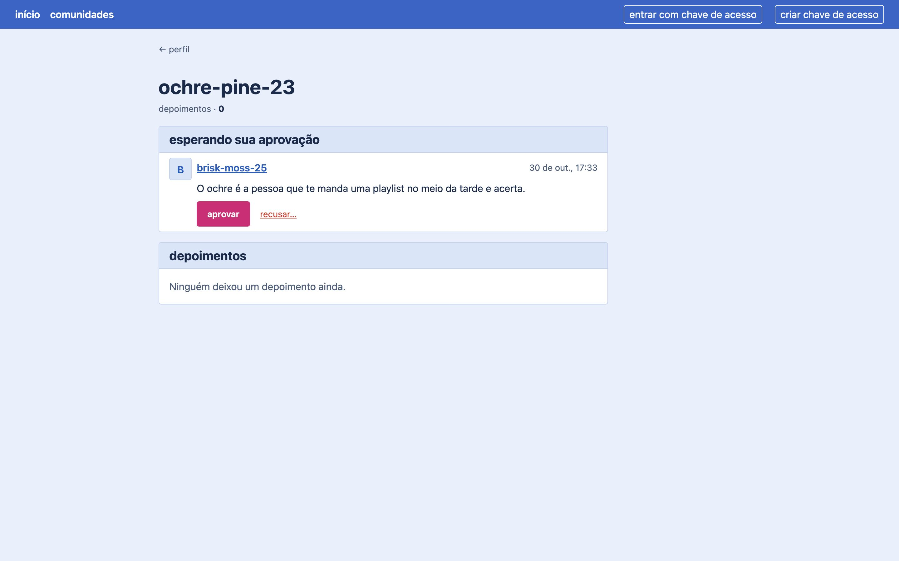
B's own page the moment A wrote, no reload: the pending copy with "aprovar" and "recusar…".
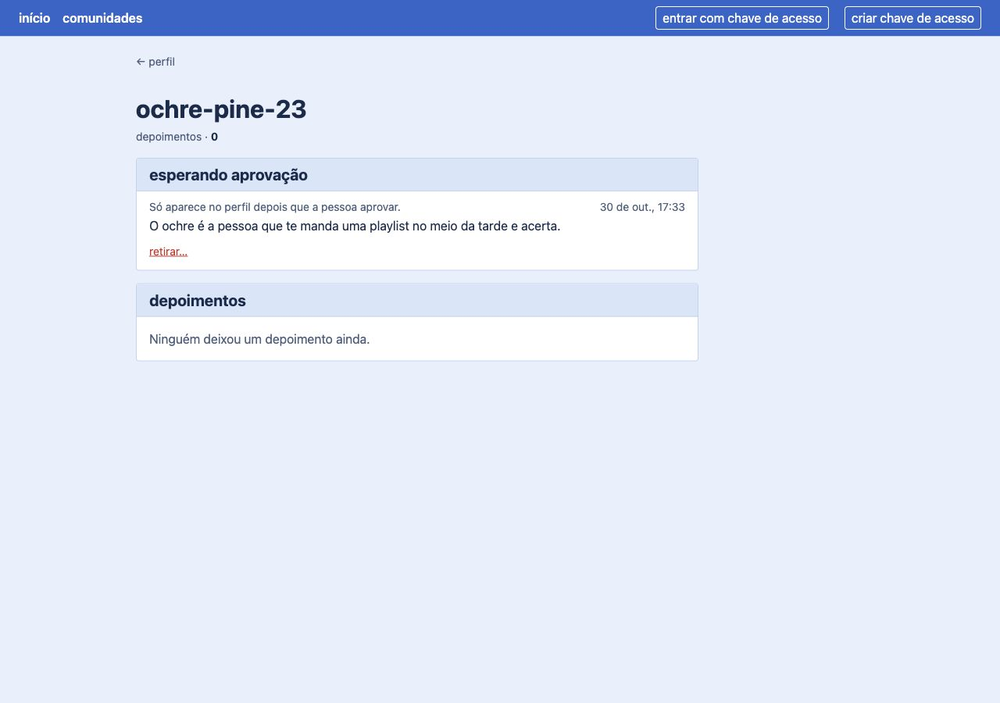
A's side of the same moment: the draft waiting with its note and "retirar…"; the box gave way to it.
The profile with its communities under the portrait, live stack, pt-BR.
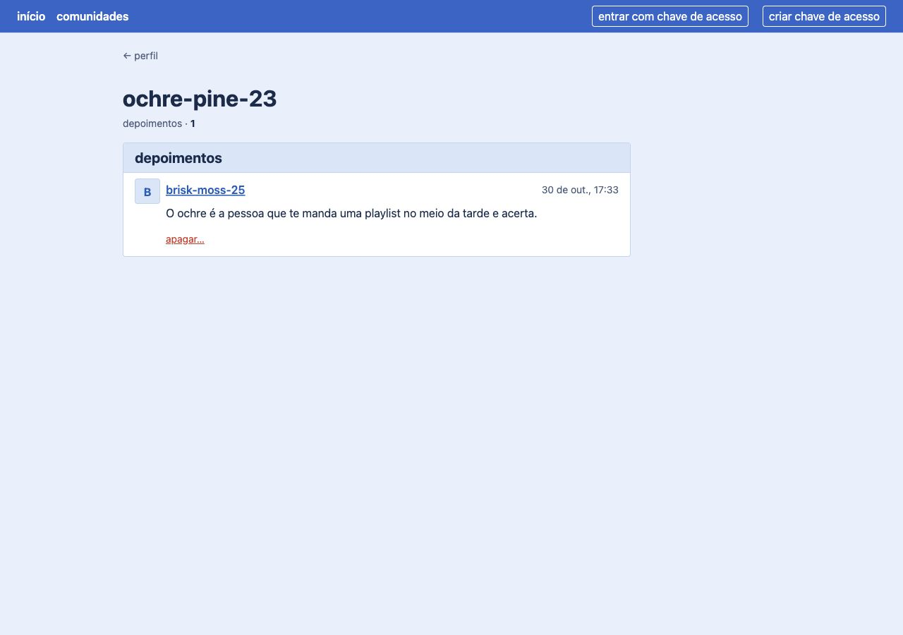
A's open page after B tapped "aprovar": the row arrived live with "apagar…", the count at 1, and no box, since one per person.
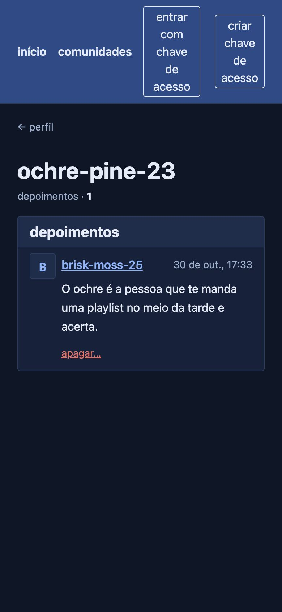
The approved state at 390px in the dark twin.
What the gates and the seats said
All five verbs exit 0. The visual check at integrate caught the blocker before the walk did: every testimonial row bound a column its table lacks, because I drew the face from a column the scrapbook gets through an embed, and no list here may carry an embed; the writer's nested region now holds the face and the name, início's asker idiom. The walk found that a region whose empty sentence is the empty string stamps nothing at all, so three panels keyed on an empty child never hid; they key on rows now. The architect seat reproduced two majors on the running database: the guard ran with elevated rights before row security and the writer column was grantable, so a stranger's hand-made insert naming someone else learned whether a private draft existed, and the same oracle sat in the friend-request guard since turn 1; the guard runs as the caller now and the two columns are no longer granted. The second was a race, two drafts for one pair passing the guard's read; unique pairs hold the rule. It also made an unfriend take the unapproved ones with it. The engineer seat found the withdraw and refuse arms losing a specificity fight and never drawing, and the fixture hiding the whole write panel in the populated frames. The product seat found the communities panel missing from three profile frames, relative times in two frames, acceptance lines bundling five decisions each, now seven ids, a box drawn for a friend whose one was already approved, and "descartar" sounding like a file, now "recusar" as a request is. Live, two guests: ask and accept, the box for a friend and the note for a stranger, a blank refused, a draft waiting on one side and pending on the other without a reload, the início line at 1, the first tap of each arm changing nothing, approve landing on both open pages with the count moving and the box gone, delete bringing the box back, a second draft refused by its subject leaving both pages. Verdicts and dispositions: ir.html.
The turn also declared Cloudflare as a release target, and the first edge release went out at its end: sayt release@cloudflare built the Worker, its one Durable Object over PGlite and the 41 MiB data directory with the demo network, minted apps/yogurt/v0.1.0, and published to yogurt.bonisoft3.com as a custom domain; the data load took 69 seconds. Guests, passkeys and every screen so far run there; what the edge does not run is the clock, which yogurt has no use for yet.
The thread: one topic, its replies, and the box at the foot
Every topic title on a community's forum is a link now, and the page it opens is the thread as the 2004 forum drew it: the title, who opened it and when, the community as a link back, the opening message, and every reply oldest first with the writer's face, name and time, because a thread is read top-down and the box sits at its foot where the next reply goes. The address carries the community as well as the topic, so the reader's own row can answer "am I a member of this topic's community" from the route alone and draw the box for members with the note to join for everyone else; the trigger from turn 1 remains the rule a hand-made request meets. A reply you wrote carries "apagar…", arming a red "sim, apagar" the way a scrap's does; nobody edits a reply, and the topic itself has no delete control until a moderation turn decides who moderates.
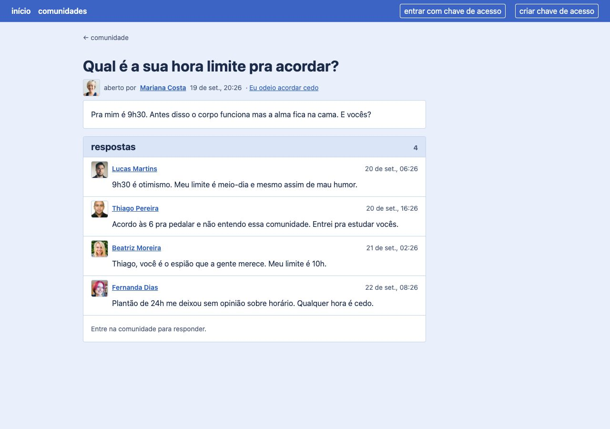
A guest who is not a member, live stack, pt-BR: the thread top-down, and the foot tells them to join.
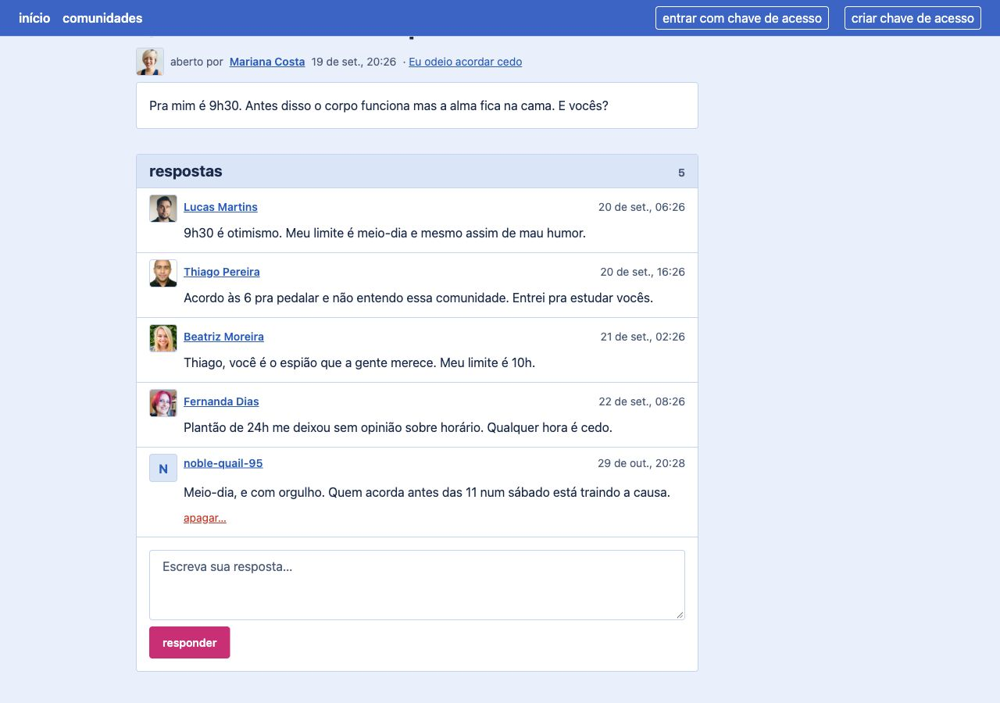
After "entrar" and a reply: the row last with the count at 5, "apagar…" on that row alone, and the box cleared.
The member state at 390px in the dark twin.
What the gates and the seats said
All five verbs exit 0. The live walk found the blocker the seats did not: every reply row rendered hidden, because the reply form's class was reply and so was each row's, and the rule that hides the box for a non-member hid the rows too; the form is reply-form now. The walk also gave reply rows the scrap row's grid and caught the test fixtures naming posts where topics were meant. The product seat read the frames against the shell and found relative times the shell never draws, a count over a different number of rows, a "Você" no string produces, and no frame for the armed delete; the frames now show what datetime renders, a deleting state sits on the delete path, the acceptance line for an unknown address and the one for an outsider are their own ids, the thread has one back link, the textarea has its own name, and the refusal a member typing spaces meets no longer blames their membership, since spaces and a non-member are one SQLSTATE. The engineer seat found the note to join flashing before the membership probe resolves, which the hold rule from the community page now covers, two controls under the touch height, a self-inflicted specificity fight over the handle, a dead strip under other people's replies, and a refusal paragraph that could never fire. Live: the title link, the outsider's note, the blank refusal, a reply landing last with the count moving, "apagar…" on that row alone, the first tap deleting nothing and the second taking the count back, a non-member forcing the hidden form refused by the guard, and the unknown address with its way back. Verdicts and dispositions: ir.html.
A community's page: who is in, and the forum
Every community name is a link now, and the page it opens is the 2004 one: the picture or letter, the name, the category, how many members and who owns it on the left; "quem somos", the newest twelve members with the count, and the forum on the right. The arm is read the way the profile reads a relation, a membership probe nested in the reader's own row, and it draws "entrar na comunidade" or "você é membro" with a two-tap leave. The forum lists the topics newest first with who opened each and how many replies it has; its new-topic form is drawn for members alone, while the trigger from turn 1 remains the rule a hand-made request meets. A topic's own page, where the replies live, is the next turn.
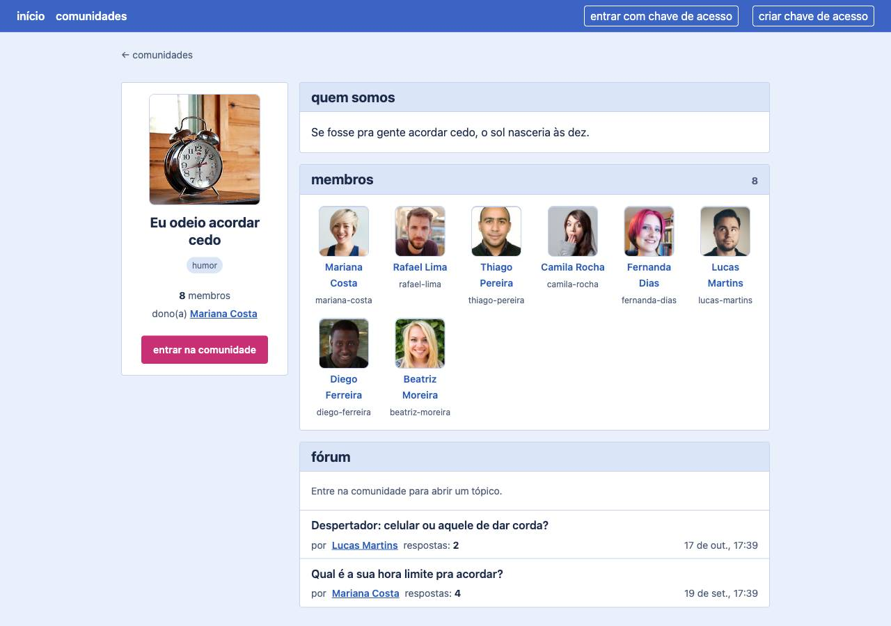
A guest who is not a member, live stack, pt-BR: the one accent control is "entrar na comunidade", and the forum tells them to join.
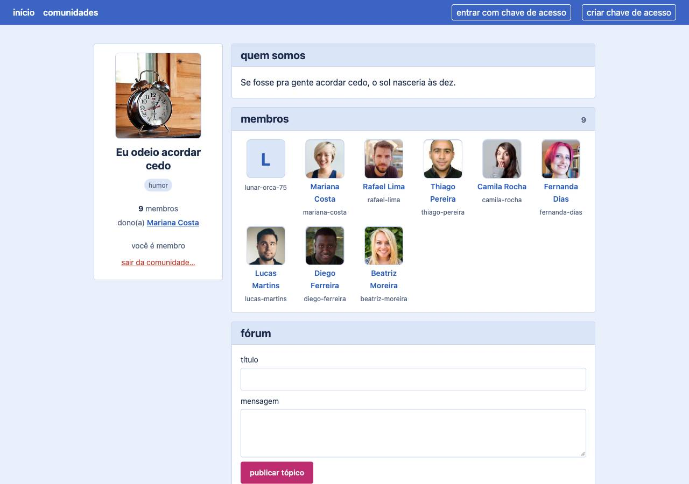
After "entrar": the count at 9, the arm flipped, the guest first among the members with their letter, and the new-topic form at the head of the forum.
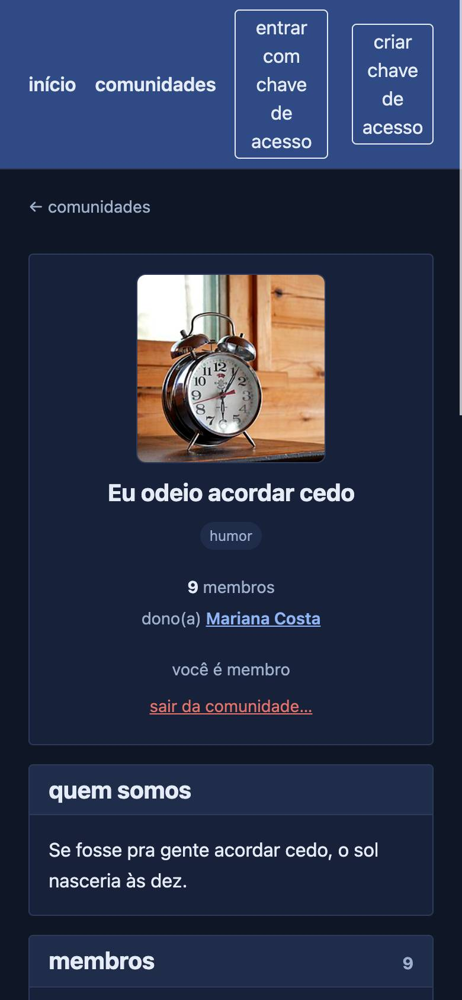
The member state at 390px in the dark twin.
What the gates and the seats said
All five verbs exit 0. The engineer seat found the blocker before the walk reached it: the me region's item root was the membership probe itself, and an item's root is never searched for nested regions, so the probe never hydrated and the arm was wrong for everyone, the same trap the reader's card met in turn 1; the probe now sits under a wrapper, and every rule keys on the stamped arm rather than on emptiness. The product seat caught two lines carried over from the profile, "quem sou eu" on a community and a failed leave told that joining failed, and asked for the join refusal to be drawn, a frame and an assertion for the two-tap leave, count-neutral "respostas: 1", an acceptance line for an unknown address, and decisions on the owner leaving and on who edits a community. The qa seat walked it with two guests and found a member without a photo drawing an empty box above their letter, in my own capture too; the shared face box now gives an empty picture no room. Live: join, a topic, the first leave tap deleting nothing, the second taking the count back to 8 with the note returning; another reader's join reaches an open page on its next read, which the decision now says. Verdicts and dispositions: ir.html.
The directory, by category, with the box that makes a new one
Communities were the other half of the 2004 product, and until now they were a rail on início. The comunidades page is the directory as it was: ten category sections in one fixed order, each community a row with its picture, its name, its description and how many members it has; a category with nothing in it draws nothing. The search is a row like everything else here: one tab row the box upserts, with the results nested in it, so a search is a submit and a blank search draws no panel. The create form sits right under the search, name, category and description, and the new community lands in its section on the spot. The strip gained the link, and início's rail its "ver todas as comunidades". A community's own page is the next turn, so names are not links yet.
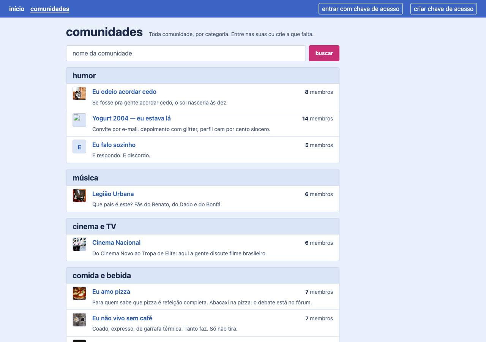
The directory on a laptop, live stack, pt-BR: the first four category sections.
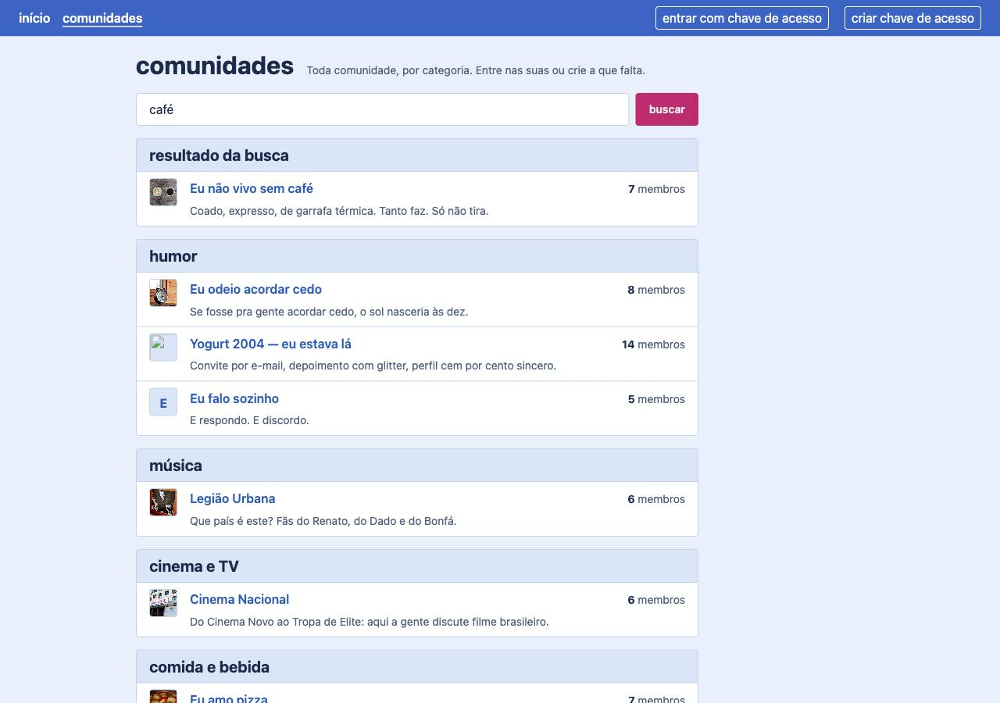
Searching "café": the hits appear above the categories; what was typed stays in the box.
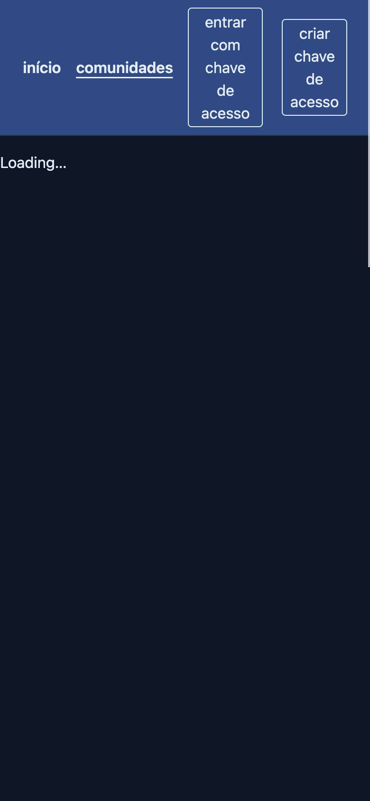
The directory at 390px in the dark twin.
What the gates and the seats said
All five verbs exit 0. The walk created "Eu amo pão de queijo", which appeared under its category with zero members and the form cleared. The rename had left one dead picture link in the demo data, a Commons file whose name carried the old product's; that community now wears its letter. The product seat asked the create form to sit where the empty search lands, the duplicate-name question to be decided (allowed, as the original allowed its thousand clones), the hit cap, the wildcards and the directory's relation to the global search to be argued, the member count to enter the browse test, and a sentence for a directory with no community at all; all folded in. The architect seat simulated the page's requests: the ten section reads coalesce into one and the counts into another, but every face read repeats its key and costs a request of its own, a platform seam now on the record beside the category word living in four places. The engineer seat asked for a frame that shows a search with no hits and a hidden empty category, a guard against ten headers flashing before their lists bind, a placeholder option so the category is chosen rather than defaulted, and one shared touch-sized rule for band links. Verdicts and dispositions: ir.html.
Two people, two pages, no reload
Turn 4 left a defect on the record: the person who accepted a request saw the friendship only after a reload, because the friendship rows are born by a trigger and a server-durable region re-reads only after this client's own write. This turn makes the three relation tables live, so a row the server mints reaches both readers through the sync shape, and reads every relation as the reader's own rows, each nesting a probe on the page's person, because a filter through an embed never updates live. Início gained the panel the 2004 front page had, "pedidos de amizade", with accept and decline on each row and a sentence when nobody is waiting. The profile's amigos panel shows the newest twelve with the count in its band link, which leads to the new amigos page. The walk below is two guests on two pages: one asks, the other sees the request arrive on início without touching anything, accepts, and the first one's open page moves to "vocês são amigos" with the count at one.
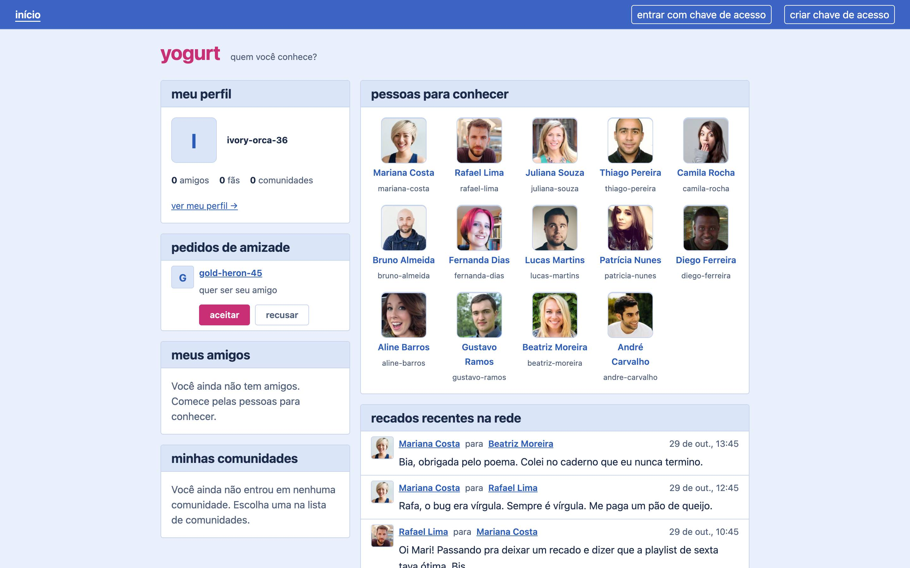
B's início the moment A asked, no reload: the request under B's card with accept and decline.
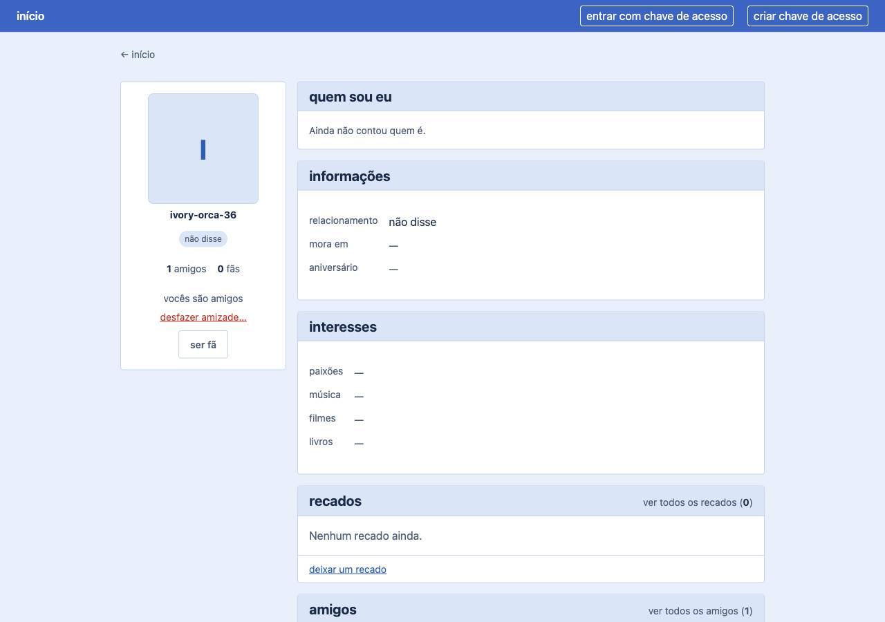
A's page of B, still open from the ask: B accepted on início and this moved to friends with the count at 1.
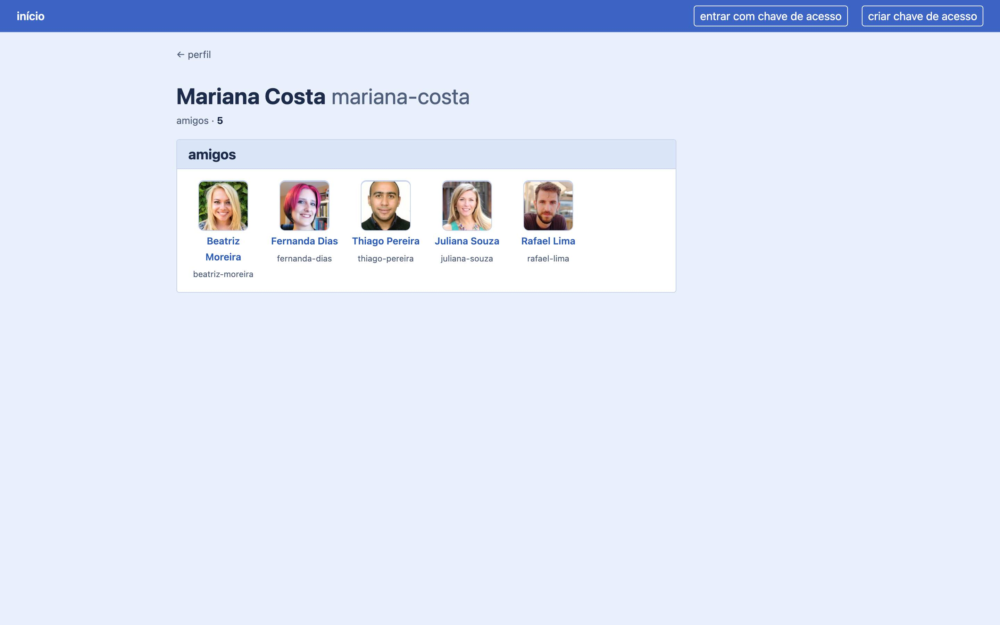
The amigos page, one tap from the profile's band link.Início at 390px in the dark twin, a request waiting: accept is the one accent control.
What the gates and the seats said
All five verbs exit 0. The walk also found what the seats had not: início's "recusar" refused with "Não deu pra responder", because the panel read its rows through an embed, which routes a live table through PostgREST, and a row that arrived that way is not in the collection a row-scoped delete resolves against; the asker's name is now read through a nested region on their own key, and the decision records the mechanism. The architect seat corrected the decision's reasoning: an embed-path read on a live table is live, by re-reading on every change in the network, so the per-row probe is justified by that cost and by the collection fact above, not by staleness; the cost model now counts the network's write rate times open tabs, not rows. The engineer seat found two rule pairs tied so that friends plus a request drew both arms, and that nothing stopped a request to a friend or across one already waiting; the hide rules now outrank, and a trigger refuses both cases while an accept clears the reverse pair. The product seat's one major was the home frames, which never drew the panel; drawn now, with its empty sentence on a fresh guest's início and the amigos link in the profile frames. It also asked for the decline to be asserted live and worded in acceptance, and for the panel's place, the absence of a sent-requests panel, twelve versus nine and the order to be argued; all in the decision. Verdicts and dispositions: ir.html.
The scrapbook, and the box that was the point of it
Scraps were the other half of yogurt. Each person now has a recados page: their name and how many, the box first because leaving one is why anyone opened it, and every scrap on their page newest first with the writer's face, name and time. A scrap you wrote, or one left on your own page, carries "apagar…", which arms a red "sim, apagar" the way unfriend does. Under every scrap, "responder" goes to the writer's own scrapbook, which is where a reply lived in 2004. The profile teases it: the newest three, the count in the band's link, and the foot's link to the box. The rule for who may delete is the policy's OR of writer and owner, and the control is drawn for those two alone by two probes on the reader's own row in each scrap's row, the ownership primitive applied twice.
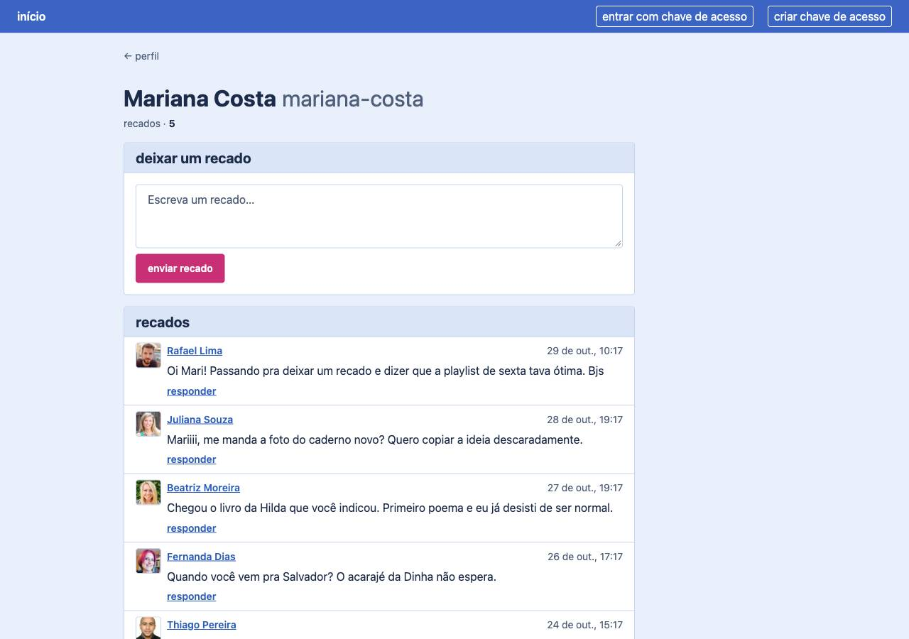
Mariana's scrapbook, live stack, pt-BR: the box first, then five scraps newest first.
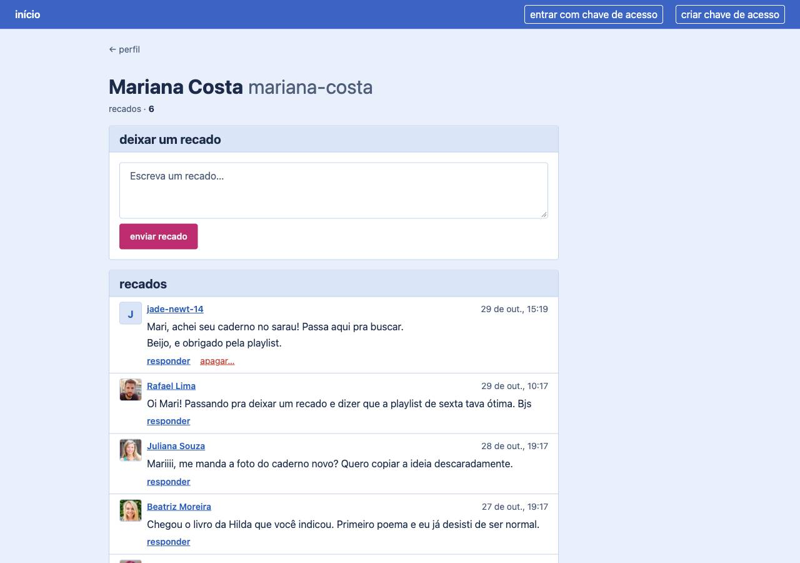
After the guest wrote one: the count moved to 6, the row is first with its line break kept, and "apagar…" is on that row alone.
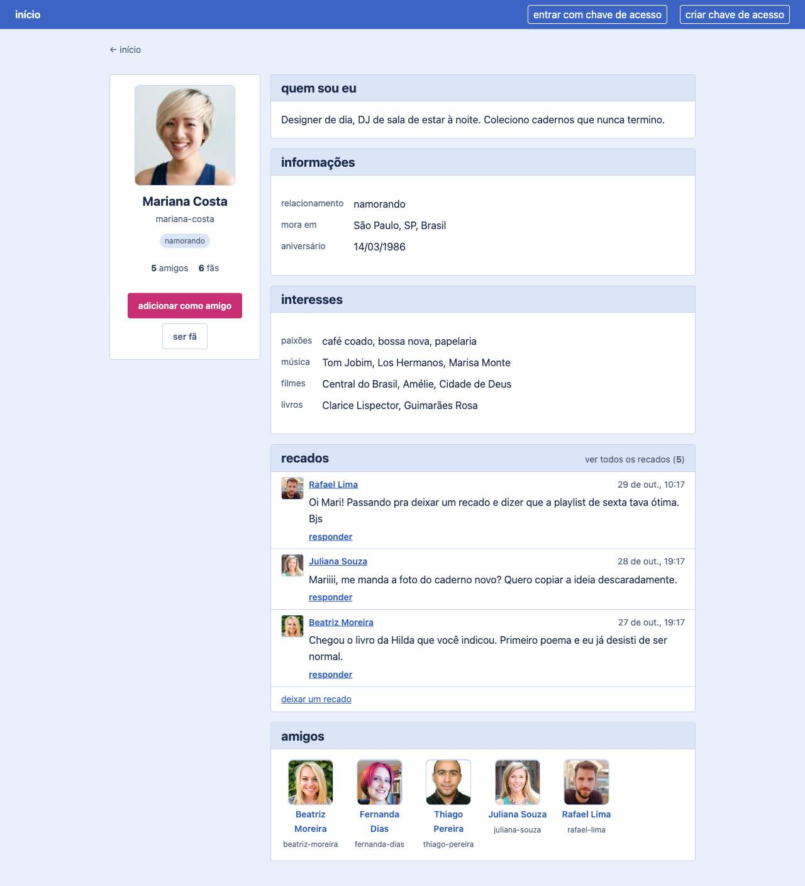
The profile's teaser: three newest, the count in the band's link, the box one tap away.The same page at 390px in the dark twin.
What the gates and the seats said
All five verbs exit 0. The product seat's one major was that the teaser was specified in prose and reads but drawn in no profile frame; it is drawn now, in light, dark and on one's own page. The same review asked for a reply road, a two-tap delete matching unfriend, a stated failure for delete, the declared dark tokens in the frames, tests that assert the time and that a third person sees no control, and a decision on self-scraps, paging and order; all folded in. The engineer seat found nothing above low: a nameless page owner on início now falls back to the handle, and three page widths became measures in DESIGN.md. Live, the walk was: the teaser on Mariana's profile, the box, a two-line scrap that landed first with its line break and the count moved from 5 to 6, "apagar…" on that row alone, then "sim, apagar" and the count back to 5. Verdicts and dispositions: ir.html.